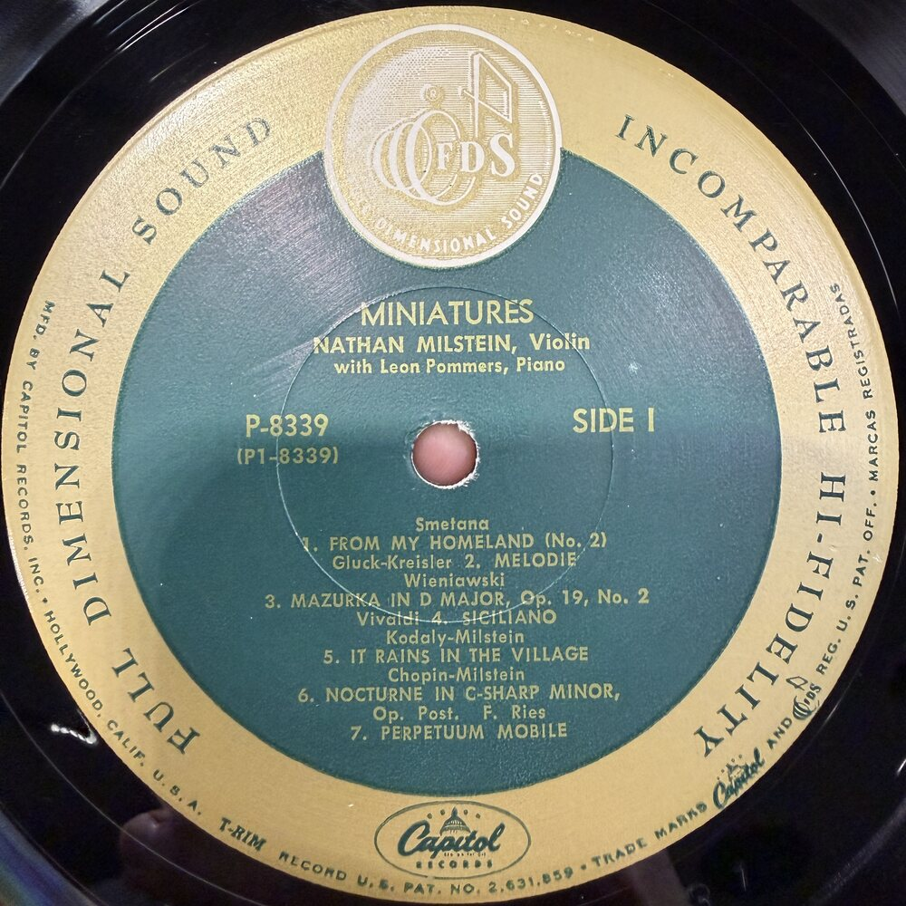
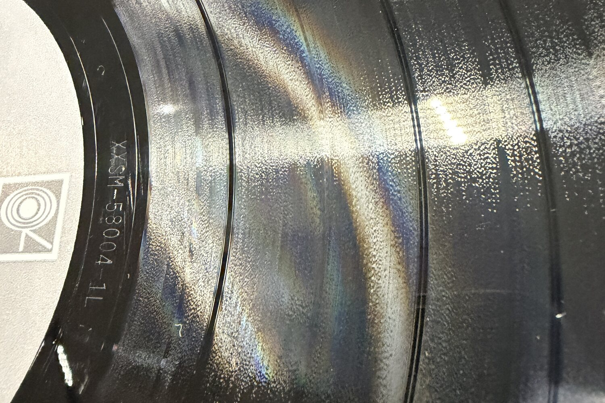
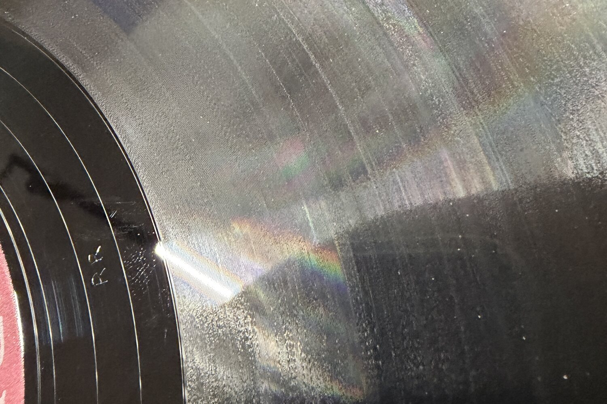

오리지널 초반 프레싱 LP를
찾는 이유
초반과 재발매의 음질 차이는 어디서 오는가. 래커 커팅부터 스탬퍼 마모, 매트릭스 세대, PVC 배합까지 — 아날로그 제조 공정의 과학·공학 근거로 풀어봅니다.
"초반과 재발매 앨범 음질 차이가 큰가요?", "요즘 나오는 리이슈 리마스터 LP가 더 음질이 좋지 않나요?"
매장에 방문하시는 고객님들께서 많이 문의하시는 질문입니다. 이 궁금증을 가진 분들께 도움이 되었으면 하는 마음으로, LP를 찍어내는 공정에 초점을 맞춰 오리지널 초반·재반, 그리고 현대 리마스터 재발매 바이닐의 음질·품질 차이가 어떤 지점에서 발생하는지 자료를 수집해 정리했습니다.
오리지널 초반 프레싱에 대한 수요가 높은 이유는, 후기 프레싱이나 현대 재발매본에 비해 우수한 음질로 이어진다는 점에 있습니다. 이는 단순한 수집가의 향수가 아니라, 아날로그 제조 과정의 과학적·공학적 원리에 기반합니다.
1. 바이닐 레코드 제조 과정과 물리적 원리
1.1 기본 제조 공정
바이닐 레코드는 폴리비닐 클로라이드(PVC) 디스크에 새겨진 물리적 홈(groove)으로 소리를 저장하며, 스타일러스가 이를 추적해 오디오 파형을 재생합니다. 이 과정은 아날로그 마스터 테이프에서 시작하여 래커 디스크 절단 → 전기 도금을 통한 금속 마스터(파더) 제작 → '마더' 플레이트 → 최종 스탬퍼(음각 몰드) 생성의 단계로 진행됩니다.
스탬퍼는 약 1,000회 프레싱 후 눈에 띄는 마모가 발생하며, 한 마더 플레이트는 약 10개의 스탬퍼를, 한 파더 플레이트는 약 10개의 마더를 생산할 수 있습니다 (Vinyl Moon, 2020). 즉 2단계 공정으로 약 11,000장, 3단계 공정으로 약 100,000장을 제작할 수 있습니다.

1.2 래커 커팅 장비의 기술적 우수성
1970년 도입된 Neumann VMS70 디스크 커팅 래이즈는 현재까지도 전 세계 대부분의 전문 래커 커팅 시스템의 주축입니다 (Neumann, 2025). 진공관 기반 커팅 앰프(SAL 74B)의 음향 특성은 트랜지스터 기반 현대 시스템과 다른 하모닉 특성을 보입니다.
2. 스탬퍼 마모와 음질 열화의 메커니즘
2.1 물리적 마모 과정
각 스탬퍼는 최대 약 100톤의 압력과 약 150°C(300°F)의 고온에서 반복 프레싱 사이클을 겪으며, 이 마찰이 스탬퍼의 미세 그루브를 침식시킵니다 (Disc Makers, 2025). 약 1,000장 무렵부터 마모가 시작되고 오디오 품질이 저하되기 시작합니다.
2.2 주파수 응답 변화
- 고주파 손실 — 고주파를 담는 미세 홈이 평탄화되어 소리가 둔탁해지고 선명도·반짝임이 감소합니다. 스펙트럼 분석으로 측정 가능합니다 (Disc Makers, 2025).
- 노이즈·왜곡 증가 — 마모된 스탬퍼는 결함을 비닐에 압착해 표면 노이즈(팝·클릭·히스)를 유발하고, 홈 벽이 불균일해지면 내부 홈 왜곡·비충전(non-fill)이 발생합니다.
- 동적 특성 압축 — 파형의 미세 진폭 변화가 평활화되어 '펀치'와 깊이가 줄어듭니다 (Disc Makers, 2025).
2.3 매트릭스 코드와 스탬퍼 세대 추적
데드 왁스에 새겨진 매트릭스/런아웃 코드(예: 'A1'은 초기, 'A3'은 후기)는 스탬퍼 세대를 나타내며, 낮은 숫자가 원본에 가깝고 충실도가 높습니다 (London Jazz Collector, 2025). 수집가들이 특정 초기 매트릭스 넘버를 추구하는 과학적 근거입니다.

코디드바이닐즈는 이 매트릭스·런아웃 각인을 직접 판독해 초기 스탬퍼 세대를 식별하고, 판본 정보로 기록합니다. → 그레이딩 가이드 보기
3. PVC 재료 특성과 음향학적 고려
3.1 PVC의 음향 특성
바이닐 레코드는 80% 이상의 PVC와 나머지 아세테이트 폴리머로 구성되며, 아세테이트는 프레싱 시 가공 온도를 낮추기 위해 첨가됩니다 (Stereo Lab, n.d.; Chemical & Engineering News, 2016). PVC는 대부분 비정질이지만 10–20%의 결정성을 가져, 홈을 지지하고 바늘을 견디는 구조적 견고성과 부드러움을 동시에 제공합니다 (C&EN, 2016).

3.2 초기 vs 현대 PVC 배합
초기 바이닐은 버진 PVC를 주로 사용했으나, 현재는 재활용 비율이 높아 음향 특성이 달라집니다 (Stereo Lab, n.d.). 버진 비닐은 표면 노이즈가 적은 반면, 재활용 비닐은 환경 친화적이지만 오염물질을 포함할 수 있습니다 (Disc Makers, 2025).
3.3 음향학적 측정값
소프트 PVC는 약 1,395 m/s의 음속과 1MHz에서 0.441 dB/cm의 감쇠를 보입니다 (Ceha et al., 2015). 이러한 물리적 특성은 홈의 정밀한 재현과 직접 연관됩니다.
4. 현대 재발매와 리마스터링의 한계
4.1 소스 재료의 열화
원본 마스터 테이프는 노화(자기 산화물 박리·탈자화)로 열화되므로, 재발매는 복사본이나 디지털 전사를 사용합니다 (Wikipedia, 2025). 이는 세대 손실을 유발하여, 신선한 마스터에서 직접 절단된 오리지널보다 충실도가 떨어질 수밖에 없습니다.
4.2 디지털 리마스터링의 문제
많은 재발매는 디지털 파일(예: CD 마스터)에서 유래하며, '라우드니스 워'(과도 압축)로 동적 범위가 희생되고 클리핑이 발생할 수 있습니다. 초기 오리지널 아날로그 프레싱은 더 자연스러운 다이내믹스를 보존합니다 (Rumsey, 2014; Murphy, 2021).
4.3 현대 공장의 프레싱 품질 편차
바이닐 부흥에 따른 대량 생산은 재활용 비닐·양산 공정·덜 정밀한 장비로 휨, 스핀들홀 이탈, 표면 노이즈 문제가 보고되곤 합니다. 아날로그 프레싱 시대의 공장은 전문 지식에 기반한 '느린 공정'으로 품질 관리가 우수했습니다 (Disc Makers, 2025).
5. 음질 측정과 객관적 검증
5.1 주파수 응답 분석
포노그래프 픽업의 주파수 응답은 두 가지 턴테이블 속도에서 측정해 더 정확한 카트리지 응답값을 얻을 수 있으며, 이 방법론이 스탬퍼 세대별 음질 차이를 객관적으로 측정하는 데 활용되었습니다 (Jakobs, 1970).
5.2 스탬퍼 마모 모니터링
프레싱 과정에서 50장마다 레코드를 꺼내 승인된 테스트 프레싱과 일치하는지 검사하고, 음질 저하가 확인되면 스탬퍼를 교체하는 절차가 있었습니다 (Furnace MFG, n.d.).
5.3 재생에 의한 마모
한편, 적절히 관리된 레코드는 100회 이상 재생해도 음질 저하가 미미하며, 그 차이는 데시벨의 분수 단위로 인간의 귀로는 인지하기 어렵다고 보고됩니다 (Headphonesty, 2025; Vinyl Record Life, 2022). 즉 음질 차이의 핵심 변수는 '재생 횟수'보다 '어느 세대 스탬퍼로 찍혔는가'와 '어떻게 보관되었는가'입니다.
6. 결론과 권고
물리학적으로 아날로그 재생은 마모와 복사로 인한 누적 손실을 최소화하는 초기 프레싱을 선호할 수밖에 없는 구조입니다.
- 매트릭스 코드 확인 — 구매 전 매트릭스 코드나 오디오파일 포럼의 A/B 비교를 참조해 초기 스탬퍼 세대를 식별합니다.
- 상태와 보관 — 바이닐의 내구성은 두께·무게·홈 기하학 등에 좌우되며, 적절한 보관·관리로 수십 년간 음질 저하 없이 보존될 수 있습니다.
- 장비 최적화 — 잘 조정된 턴테이블과 고품질 스타일러스가 레코드 수명과 음질에 결정적입니다.
마치며
모든 오리지널이 우수한 것은 아닙니다. 오랜 세월 보관해온 오리지널 초반 바이닐은 보관 상태에 따라 음질 편차가 클 수밖에 없습니다. 잘 보존된 초기 앨범을 우선으로 수집하실 때 높은 수준의 오디오적 쾌감을 얻으실 수 있습니다.
그래서 코디드바이닐즈는 화학 대전방지제를 쓰지 않고 100% LDPE·HDPE 보존 소재로 음반의 오늘뿐 아니라 30년 후의 컨디션까지 지킵니다. → 보존 관리 기준 보기
참고문헌 (References)
- Ceha, D., Peters, T.M. & Chen, E.C.S. (2015). Acoustic characterization of polyvinyl chloride. ResearchGate.
- Chemical & Engineering News (2016). Groovy chemistry: The materials science behind records.
- Disc Makers (2025). How vinyl records are made / pressing quality / the science behind vinyl pressing.
- Furnace MFG (n.d.). Vinyl 101: How to make a vinyl record.
- Headphonesty (2025). How many plays does it take to destroy a vinyl record?
- Jakobs, B.W. (1970). Frequency response analysis of phonograph pickups. JAES, 18(3).
- London Jazz Collector (2025). US pressing plant stamps and other identifiers.
- Murphy, M.J. (2021). Reintroducing analog and vinyl audio production to digital natives. JAES.
- Neumann (2025). Well Made Music vinyl mastering.
- Rumsey, F. (2014). The vinyl frontier. JAES, 62(7/8).
- Stereo Lab (n.d.). PVC. / Vinyl Moon (2020). How records are made: Part 1.
- Vinyl Record Life (2022). / Wikipedia (2025). Conservation and restoration of vinyl discs. / Yamaha Music (2024).